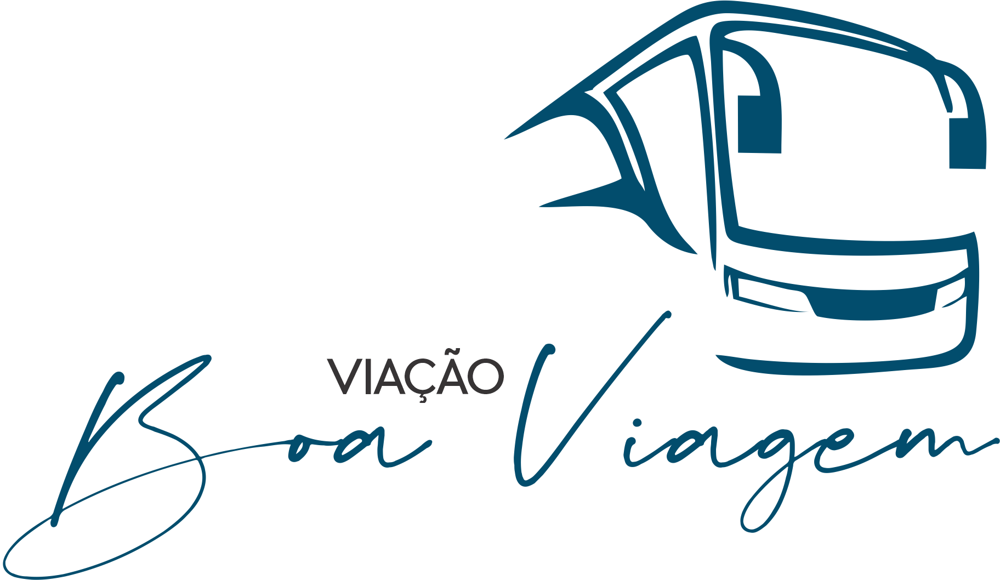
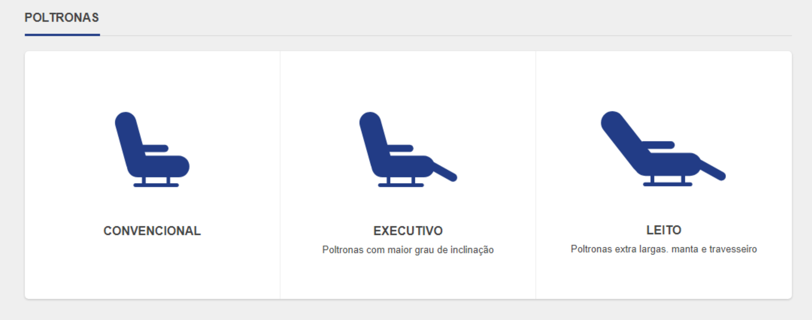

 Salvador - BA
Salvador - BAO litoral da Bahia se refere à faixa costeira do estado da Bahia. Compreende mais de 1 100 quilômetros de extensão, sendo o maior do Brasil. É completamente margeado pelo Oceano Atlântico e suas reentrâncias no continente.
Atualizados 3 minutos atrás
Paulo Afonso - BAA cidade recebe turistas pelo fato de possuir belezas naturais como as cachoeiras e a reserva ambiental Raso da Catarina (onde encontram-se espécies ameaçadas de extinção como a arara-azul-de-lear e a pomba-avoante).
Atualizados 3 minutos atrás
 Recife - PE
Recife - PEUma boa ideia pra fugir dos preços altos é apostar nos meses alternativos – justamente novembro, que é sequinho, e março, abril e setembro, que já são chuvosos. Mas para quem quer economizar tem um bom ponto a favor: as praias de Recife têm águas quentinhas o ano todo, entre 26º C e 28º C.
Atualizados 3 minutos atrás
Presente nas regiões Norte e Nordeste do país, a Viação Boa Viagem conta com 150 veículos modernos, que transportam mais de 1,5 milhão de passageiros por ano. Ao todo, são mais de 75 mil viagens todos os anos. Demais, não é?
Atualmente, a Viação Boa Viagem é líder em linhas do Norte ao Nordeste do Brasil, com o foco principal na segurança e conforto de seus passageiros.
A Viação Boa Viagem atua em mais de 10 estados brasileiros, como: Alagoas, Bahia, Ceará, Maranhão, Pernambuco, Piauí, Paraíba, Rio Grande do Norte, Sergipe e Tocantins.
Confira os principais terminais atendidos pela Viação Boa Viagem:
Entre os destinos com passagens de ônibus Boa Viagem estão Teresina, João Pessoa, Aracaju, Campina Grande, Recife e Natal.
Ônibus Convencional
Os ônibus convencionais da Viação Boa Viagem possuem 46 poltronas, levemente reclináveis, com encosto para as pernas, ar-condicionado e banheiro.
Ônibus Executivo
A linha executiva da Viação Boa Viagem possui veículos com maior espaço entre as poltronas, além de um maior ângulo de inclinação. Ar-condicionado, água e banheiro também fazem parte desse modelo.
Ônibus Leito
São os veículos mais confortáveis da Viação Boa Viagem, ideais para longas viagens. Os ônibus leito possuem poltronas extralargas, sistema de ar-condicionado, mantas e travesseiros.
